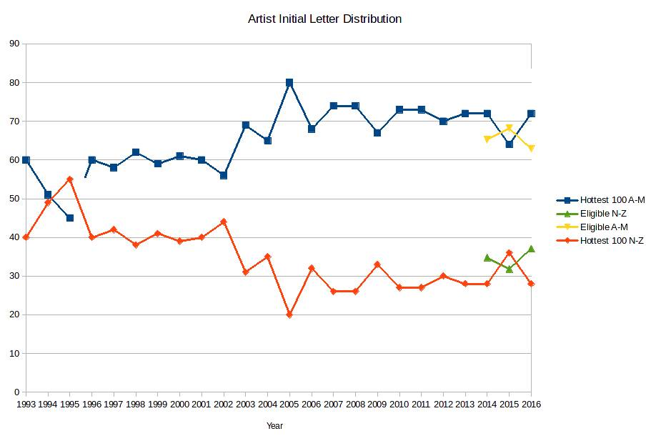

Band Names Revisited
This whole statistical exercise got started because Ehren Thompson and I both voted overwhelmingly in 2014 for bands whose names started in the first half of the alphabet. I made a graph that showed that a bit over 70% of the entries on the Hottest 100 had band names starting with letters A through M.
I’ve updated the graph for the last couple of years and the trend has persisted. I also have some data now that I didn’t have then: the list of eligible songs (for 2014, 2015 and 2016). Plotting their frequencies of first letter, we are able to solve the mystery. The Hottest 100 is skewed in this way because the eligible songs are skewed in this way, and not because people work through the voting system alphabetically and get fatigued towards the end (as I had conjectured).
